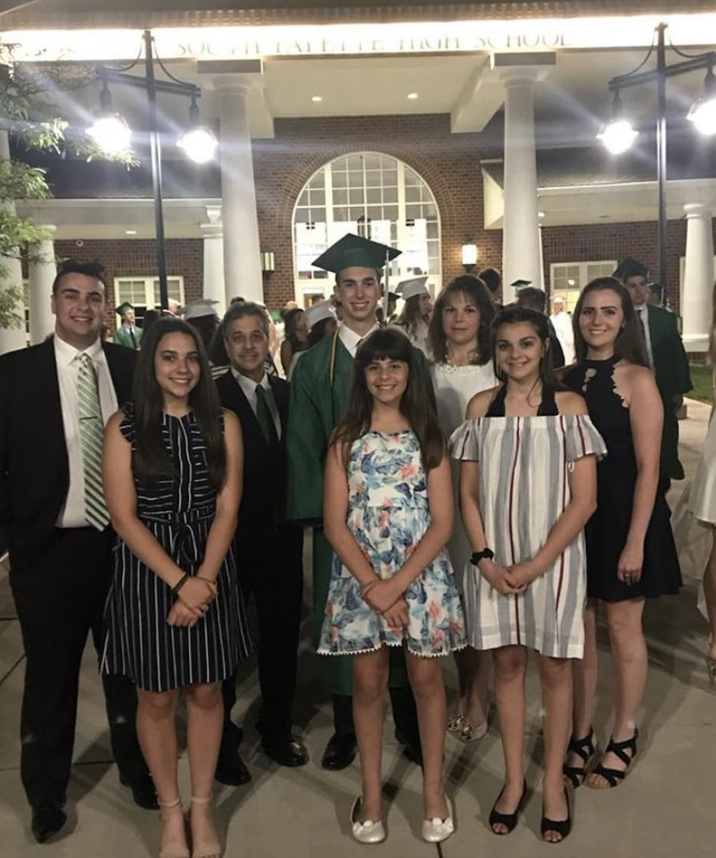
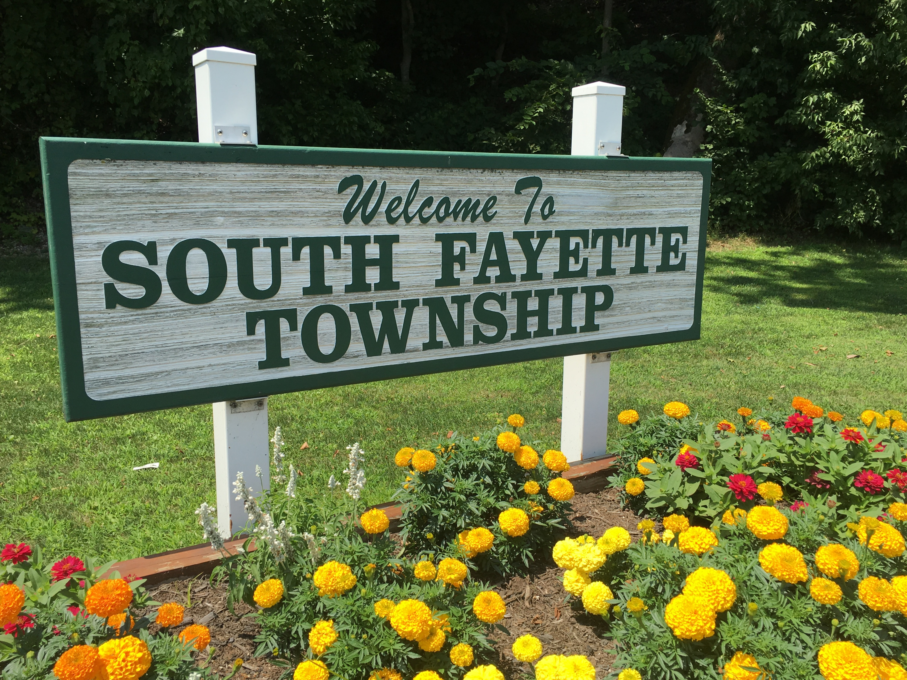

My family is very important to where I am in life now. They have always been there to support me in my academic career and have pushed me to pursue my dreams. Initially, I wanted to go to trade school to save money, but my family pushed me to work hard and go to college because they felt I had enough potential to make something better of myself. I always liked working with robotics in high school and I knew that whenever I would participate in my clubs, my family was there to make sure I never gave up when I had failures and always pushed me to do my best work. I know that I can always depend on them to be there for me and I will always be there for them, because that is what family does for eachother. I am the middle child out of me and my five siblings, so I must set the precident and make a good example for them to follow. That is my job as a brother to teach them to always make sure family is first. It is important to recognize this because sometimes family is all we have, and without them life can become cumbersome and difficult.

Entertainment
I do not know really what to write about here, so I will just talk about how much I enjoy sports. I am a very big hockey fan and growing up in Pittsburgh I have been able to witness the amazing Penguins win three Stanley Cup championships within my lifetime so far. I usually spend my time watching hockey to key down after a long day of work. If anyone is ever wondering what I do on my phone, I am not on snapchat, not on instagram, but instead I have my NHL app opened up, reading news and updates on everything in the league.
Community
I think the best example of my community is my home town of South Fayette. It is a small town where everyone knows everyone and nothing bad ever happens. If there is a major event almost everyone knows about it, and if you do not, well you must have been away on vacation. Although people might think you can create a "community" of people online, they cannot because it is nothing more than a group of strangers gathering who may never meet in their lifetime. Community to me is like a family, we do everything together, see everything together, and if we are not together when something happens, it will be told as a story during the next community event like a high school football game on a friday night. In a small town that is all we have and it is perfectly fine because everyone gets along and lives life to the fullest. I do feel it is possible to create a community online or anywhere in the world, but you have to make sure everyone familiarizes themselves with everyone or else the whole feeling of a community is gone.

School
I went to school at South Fayette high school until my graduation in 2018. The school always held us to the highest standards and prepared us very well for our future ahead. I was and will be the academic one in my family. I was apart and ran most of the STEM organizations at my high school throughout my four years and my peers always felt that I was destined to be in engineering. Our teachers took pride in grading the hardest they possibly could to make us prepared for the harsh environment of college and it's reputation for weeding out those who are not cut out for their programs. I knew that after I completed my primary education, college would be easier for me considering all the tools and knowledge South Fayette gave to me, and I really do owe them because the skills I possess now were taught from a very young age. As it is known I study mechanical engineeering here at Pitt (or else I would not be writing this) and I am very glad I made the decision to go here. I feel that college here has pushed me to overcome many obstacles and at times made me struggle with topics that I thought I was a master in. It is fine though, because if I was always comfortable in what I am learning, then it would be just completing assignments and instead not learning from mistakes or wanting to learn more from struggles.